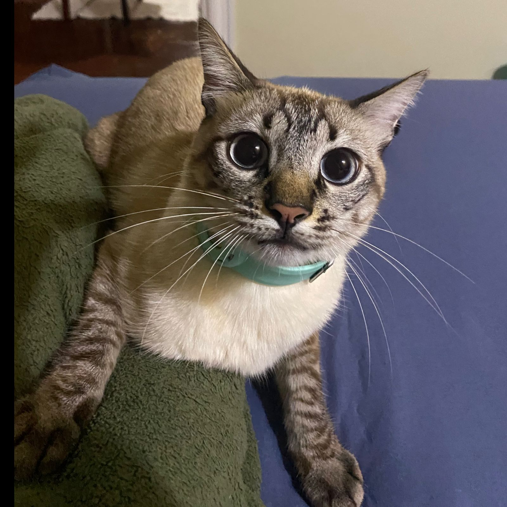
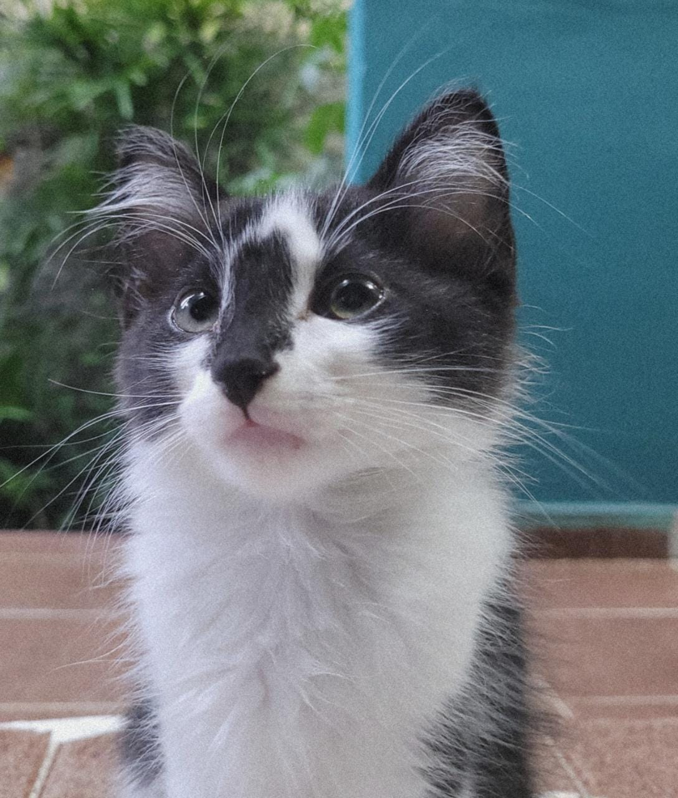

Fase 4
FASE 5
 
Mingau e Bruce arriscaram comprar uma skin random para suas mamães. Ambos detestam skin com poucos itens, e por azar, veio a skin com a menor quantidade de itens do Wolvesville.
Qual função essa skin representa?
Dica: Procure no app
Resposta